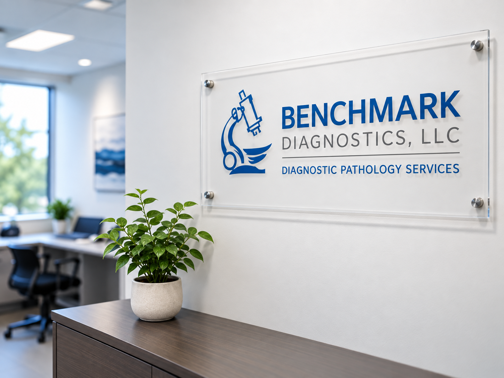
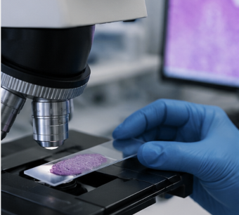
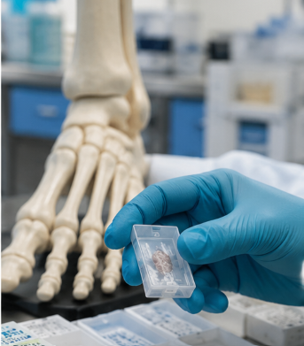

Specialized Expertise
Focused diagnostic expertise in:
Dermatopathology
Podiatric pathology
Surgical pathology
Diagnostic Pathology Expertise
Specialized dermatopathology and podiatric pathology services supporting physicians with accurate, timely and clinically meaningful diagnoses.

Why Benchmark Diagnostics
Focused diagnostic expertise in:
Dermatopathology
Podiatric pathology
Surgical pathology
Careful evaluation designed to provide physicians with clear and reliable diagnostic information.
Physician-centered communication and dependable support throughout the diagnostic process.
Supporting healthcare providers through pathology consultation and clinical insight.
Advancing pathology through research, publications and continued education.
Our Services

Diagnostic evaluation of skin disorders, biopsies and complex dermatologic conditions.
Learn More
Specialized pathology services supporting podiatrists in the diagnosis of foot and lower-extremity conditions.
Learn MoreComprehensive surgical pathology services for the diagnosis and staging of cancer and other diseases. healthcare organizations.
Learn MorePhysician Resources
Benchmark offers vast in-house testing to expedite turnaround time and ensure precision diagnostics. Test menu is also available for technical component (TC) only clients.
We are contracted with most major insurers and many local companies, including Aultcare.
Available on a call-in or pre-scheduled basis to meet each client’s individual needs.
Our ASCP-registered laboratory professionals are available for Technical Component (TC)-only services, including grossing, embedding, microtomy, and staining. Professional Component (PC)-only services are also offered by our skilled and knowledgeable pathologists.
Contact Benchmark Diagnostics for questions or additional assistance.
Research & Publications
Laboratory Communications
Including the monthly “Lab Report”, providing insights beyond diagnosis, and quarterly “Interesting Cases From Our Clinicians”.
View Item →Publication
Research publications authored by Dr. Usmani
View Item →Presentation
Benchmark Diagnostics Studies Describing Pathological Mechanisms & Observations
View Item →Contact Benchmark Diagnostics
Contact our team to discuss pathology services, physician resources or laboratory partnerships.